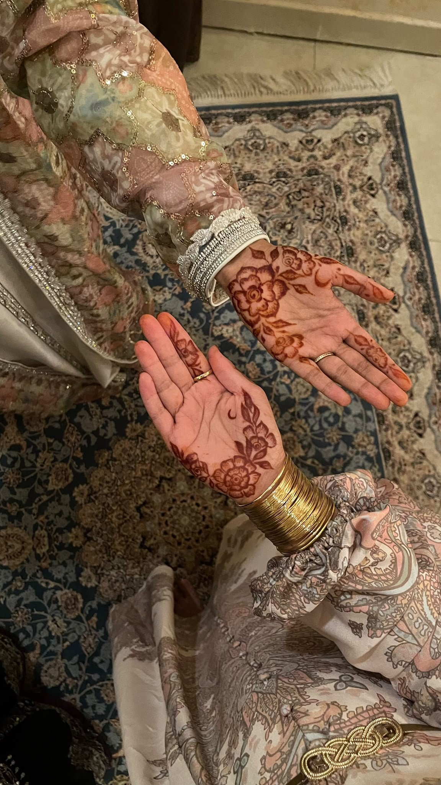

For something that disappears within a few weeks, henna has managed to leave some of my most permanent memories. Whenever I think of weddings, housewarmings, Eid, or any occasion, henna is the first thing that comes to mind. It honestly means way more than just a temporary stain on my skin.
Staying up till the sun rose, with my cousins in line to do henna, has got to be one of my favorite memories. The scent of henna would slowly settle into the room. There's something about the smell that feels nostalgic, even though I still wear henna for almost every occasion. The moment I smell it; I am taken back to those nights.
I really don’t remember the first-time wearing henna. That's because in our culture, henna is put on your hands before you can even form a memory of it.
Something that I would be proud of when it comes to henna is how, in our culture, before the main wedding event, we have a day called "henna night" where all of us put henna together. I think that’s something that I really cherish about my culture.
Choosing the design was almost as exciting as getting the henna done, and sometimes you can even choose designs from every culture, sometimes we would choose delicate Khaleeji designs or we would go for intricate desi patterns. There were always unique patterns to discover and somehow our hands would become little canvases where different cultures could meet.
But getting the henna done was only the beginning, after we covered our hands with it, we would become unusually careful. Suddenly, even the simplest things became impossible to do. We would get fed by elders or our dad. We would make sure not to touch, scratch and itch or even move our hands too much. We would also do everything in our will to make the color as dark as possible, rubbing lemon over the dried henna, using clove leaves, and following every piece of advice our elders would give us.
Th elders also always had their own theories. One of the funniest was the old saying that the darker the henna, the more your future husband would love you. We would laugh at how ridiculous it sounded. They made their own henna at home, grinding the plant form our garden into a thick paste before smoothing it over their palms and nails. We underestimated it every time, and every time, theirs came out darkest.
Then came the morning. Sometimes even before fajr, the morning prayer, we would peel dried henna off our hands, almost unable to contain our excitement. We would stare at our palms, comparing different shades of brown, and deep red, proudly showing each other, whose henna turned out the darkest. The darker it was, the happier we were.
Looking back, I realized that henna would eventually fade from our hands, but the memories never do. I hope that one day I can pass these same traditions on, the same way the elders in my family passed them down to us. Maybe years from now, another generation will be sitting together before fajr, comparing their hands and waiting for the color to darken.
